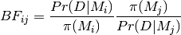
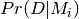
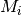
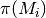

Note: documentation for BAMM and BAMMtools 2.0 is still under construction; some sections may be incomplete
The R package BAMMtools contains almost everything you need to analyze and visualize evolutionary rate dynamics from BAMM output. You will need to install this package. To install BAMMtools, type the following in your R console:
install.packages("BAMMtools")
The information below is a brief overview to get you started - there is much more than can be done. We first cover a sample BAMMtools workflow for analyzing rates and rate shifts. The general analyses described in this section apply both to speciation-extinction and phenotypic evolution studies. As such, they are not treated separately. The primary difference is the name of the parameters ( and
and  for speciation and extinction, and
for speciation and extinction, and  for trait evolution).
for trait evolution).
In case you missed it, you really should read this section before proceeding. Having a solid understanding of distinct shift configurations, marginal shift probabilities, and the overall best shift configuration is critical to appreciating what BAMMtools can do.
The sections below include:
This is a one sentence guide to major BAMMtools functions, covering several common analyses.
A quick overview of BAMM output files.
Standard tests you should do to check BAMM convergence.
This section describes how to analyze the number and location of rate shifts from a Bayesian perspective.
Robust model selection with Bayes factors
Estimating mean rates for specific clades.
Estimate marginal densities of rates for individual branches and tips
Analyze and plot macroevolutionary rates through time
Visualize sets of taxa with shared rate dynamics
This is a quickstart guide to some of the analyses discussed below (and many more are possible). Additional ideas are illustrated in the R code samples available on the BAMM graph gallery, and the BAMMtools package contains functions for a number of additional analyses.
BAMM generates three primary output files. The first is the mcmc data file, which contains several pieces of information about the MCMC simulation that may be useful in diagnosing convergence. The most important pieces of information from this file are the number of shift events, the log-likelihood of the data, and the log-prior probability of the data, for each sample from the posterior.
The second is the event data file, which contains all of the actual model parameters. Each sample from the posterior can be described with complete knowledge of all of the shift events on the tree, including their location and evolutionary rate parameters. The event data file is just a long list of all the shift events and associated parameters that were sampled, as well as the MCMC generation in which they were sampled. You will not directly do anything with this file. BAMMtools has a function for extracting all the relevant information from the file and for mapping the rate shift configurations to phylogenetic trees. A detailed explanation of the event data file can be found here.
Finally, BAMM will (optionally) generate a second MCMC output file that contains the results of a prior-only simulation. This file can be used to reconstruct the prior distribution of the number of shift events and is important for the estimation of Bayes factors.
The bammdata object is the core of most analyses discussed below. This is a complex data structure that includes a phylogenetic tree and a mapping of all macroevolutionary rate parameters sampled using BAMM. Many of the methods in BAMMtools operate directly on objects of class bammdata. This object is created in R using the BAMMtools function getEventData. Here’s sample code where we create the bammdata object (assume your phylogeny is in a file mytree.tre, and your event data file from a BAMM run is in file bammrun_eventdata.txt:
library(BAMMtools)
tree <- read.tree("mytree.tre")
edata <- getEventData(tree, eventdata = "event_data.txt", burnin=0.1)
edata is now a “BAMM-data” object, which has all the attributes of a class “phylo” object, plus many more. Please be patient with getEventData - this function can take some time to run for large datasets.
Note: The function getEventData incurs significant memory overhead in R. It will likely give you trouble with trying to process more than 2000 samples. See graph gallery for more information on how often to sample. Most importantly, never try to read in all of your event data without first doing a trial run to get a feeling for how long it will take. You can read in a subset of your samples with the nsamples option in getEventData.
The first question after running any MCMC simuluation should always be: did my run converge? While it may be difficult to prove convergence in an absolute sense, there are a few simple checks you can do. First, you can plot the log-likelihood trace of your MCMC output file:
mcmcout <- read.csv("mcmc_out.txt", header=T)
plot(mcmcout$logLik ~ mcmcout$generation)
# Also, remember that comments in R are lines that start with
# a pound sign. We'll occasionally use them here.
# R will not execute these lines - they are only for reference!
This can give you a ballpark idea of whether your run has converged. The next step is to discard some as burnin. Here we’ll discard the first 10% of samples as burnin:
burnstart <- floor(0.1 * nrow(mcmcout))
postburn <- mcmcout[burnstart:nrow(mcmcout), ]
And using these samples, it is good to check the effective sample sizes of the log-likelihood and the number of shift events present in each sample. We’ll do this using the coda library for R:
library(coda)
effectiveSize(postburn$N_shifts)
effectiveSize(postburn$logLik)
In general, we want these to be at least 200 (and 200 is on the low side, but might be reasonable for very large datasets).
As an additional test for convergence, we recommend analyzing multiple independent BAMM runs. You can test whether the runs are converging on similar distributions by analyzing the branch-specific marginal rate shift probabilities (see marginalShiftProbsTree).
If you are having trouble with convergence, please see the section on troubleshooting convergence issues.
In the BAMM framework, many different shift configurations may be (more-or-less) equally plausible. BAMM samples shift configurations in proportion to their posterior probability. In principle, this means that each sample from your posterior contains a potentially unique configuration of regime shift events.
A conceptual discussion of the meaning of rate shifts is included in this documentation and it is strongly recommended that you read this section before continuing. Approaches that identify a single best shift configuration (e.g., stepwise AIC, or other approaches that simply maximize the likelihood) are inherently limited by their assumption that the model with the best information theoretic score (AIC etc) is the model, given the candidate set of models. However, for most real datasets, the best rate shift configuration is merely one of a large number of possible rate shift configurations that have similar probabilities. The BAMM philosophy is largely oriented around addressing this. To understand the following examples, you must understand what we mean by distinct shift configurations, credible sets of rate shift configurations, and marginal shift probabilities. These are also defined in the glossary.
The first step in the analysis of BAMM output is to ask some basic questions about the number of macroevolutionary rate regimes on our phylogenetic tree. We can do this directly using the post-burn MCMC output file. Here, we’ll compute the posterior probabilities of models sampled using BAMM:
post_probs <- table(postburn$N_shifts) / nrow(postburn)
post_probs is now a vector of model posterior probabilities. We can look at these, we can plot them, we can compute posterior odds ratios, and so on. To see which models are part of the set that were sampled, you can just look at the names of this vector:
names(post_probs)
And to compute the posterior odds ratio for (say) two models ‘X’ and ‘Y’ (X and Y must be integers), you would do:
post_probs['X'] / post_probs['Y']
In general, any model that is not included in names(post_probs) was so lousy that it was never even sampled. Thus, if you fail to observe a model ‘0’ in this set, this means that you have such overwhelming evidence for diversification rate heterogeneity in your data that this model probability is effectively 0 (bear in mind that a model with name ‘0’ is model  , or a model with no rate shifts). The probability of model ‘0’ is the posterior probability of a model with just a single evolutionary rate dynamic (no rate shifts). We’ll discuss the use of Bayes factors in gauging model support a little further down in this document, but posterior model probabilities are a valuable way of identifying the best model (or set of models).
, or a model with no rate shifts). The probability of model ‘0’ is the posterior probability of a model with just a single evolutionary rate dynamic (no rate shifts). We’ll discuss the use of Bayes factors in gauging model support a little further down in this document, but posterior model probabilities are a valuable way of identifying the best model (or set of models).
Alternatively, if have our bammdata object, we can summarize the posterior distribution of the number of shifts using summary methods:
library(BAMMtools)
tree <- read.tree("mytree.tre")
edata <- getEventData(tree, eventdata = "bammrun_eventdata.txt", burnin=0.1)
shift_probs <- summary(edata)
shift_probs is now a dataframe giving the posterior probabilities of each rate shift count observed during simulation of the posterior.
There is a critical issue that arises in model comparisons using BAMM: inferences on the posterior distribution of models are not independent of the prior. This is generally not an issue if you are using a conservative prior (poissonRatePrior = 1, for example), because a model with zero rate shifts will have a high prior probability. However, if you set poissonRatePrior = 0.1 (or some other value < 1), your expected number of diversification shifts under the prior alone will increase. Hence, simply by manipulating the prior, you can potentially achieve a posterior distribution that is quite different from zero, even in the absence of diversification rate heterogeneity.
The solution that we advocate is to explicitly compare the evidence for models with at least one diversification shift to the evidence for the null model. Formally, there isn’t really a null model in BAMM, but for our purposes, it makes sense to think about model with zero rate shifts as the null hypothesis. In a Bayesian framework, we can do this by computing the Bayes factor associated with two models. This is computed as

where  is the probability of the data given model  and  is the prior probability of model . Bayes factors are notoriously difficult to compute for many applications, but they are trivial from BAMM output.
We suggest that the overall best model from a BAMM analysis is the model with the highest Bayes factor relative to the null model, . BAMMtools makes it easy to compute Bayes factor evidence in favor of one model relative to another. The analysis described below assumes that you have generated an MCMC output file involving simulation from the prior only, and that you have the corresponding output file from full BAMM run. You can configure BAMM to perform a prior simulation using the BAMM control file by ensuring that simulatePriorShifts = 1. We have not yet identified a closed-form analytical solution to the prior distribution on the number of shifts (but we suspect that one may exist). However, it is straightforward to simulate this distribution. You can even run a BAMM analysis while only performing a prior simulation by setting:
simulatePriorShifts = 1
initializeModel = 0
runMCMC = 0
The first 6 lines of your prior simulation file should look something like this:
N_shifts,prob
0,0.445591
1,0.302179
2,0.156216
3,0.0644693
4,0.0222653
5,0.00678463
where each value after the comma is the prior probability of the corresponding model with N_shifts. Assuming you have files prior_mcmc_out.txt and post_mcmc_out.txt for your analysis, you can compute a pairwise Bayes factor matrix as:
postfile <- "post_mcmc_out.txt"
priorfile <- "prior_mcmc_out.txt"
bfmat <- computeBayesFactors(postfile, priorfile, burnin=0.1)
and this will return a pairwise matrix of Bayes factors. For the whales dataset, you can do this as:
data(prior.whales, mcmc.whales)
computeBayesFactors(mcmc.whales, prior.whales, burnin=0.1)
It is very important to recognize that model probabilities for rarely sampled models are likely to be inaccurate. Hence, BAMMtools will not attempt to compute a Bayes factor for any model comparison where either model has a posterior or prior probability of (approximately) zero. For the whale example dataset, the Bayes factor evidence in favor of a model with a rate shift, relative to the null model, is very strong (BF > 70).
In the case of the whales example dataset, the Bayes factors for a model with k shifts relative to a null model with 0 shifts is
shifts Bayes factor
0 1.0
1 71.8
2 55.3
3 31.7
4 21.5
5 10.8
This tells us that a model with a single diversification shift is the best overall model, at least by comparison to the null model with zero shifts. Bayes factors greater than 20 generally imply substantial evidence for one model over another; values greater than 50 are very strong evidence in favor of the numerator model. Here, it’s pretty clear that a model with a single rate shift is much, much better than a model that lacks rate shifts.
Occasionally, you may encounter a dataset where the posterior probability of the null model is so low that it cannot be estimated (e.g., it is never sampled during simulation of the posterior). Likewise, the prior probability of the models with high posterior probability might be very (i.e., inestimably) low, depending on your value for poissonRatePrior. In this case, you will not be able to compute a Bayes factor. However, you can explicitly show the posterior and prior distributions recovered through your analysis to make it clear that the posterior distribution is shifted relative to the prior. We are actively working on strategies to address the problem of model selection when the posterior and/or prior probabilities approach zero.
The remainder of this section will use one of the example datasets included with BAMMtools. You should be able to run this code directly:
library(BAMMtools)
data(whales, events.whales)
edata <- getEventData(whales, events.whales, burnin=0.1)
summary(edata)
We will now generate a mean phylorate plot. This is a way of visualizing mean, model-averaged diversification rates at any point along every branch of a phylogenetic tree:
plot.bammdata(edata, lwd=2)
And we can add an interactive legend with legend = T (this will enable us to add a frequency histogram of rates by clicking on the graphics window):
plot.bammdata(edata, lwd=2, legend=T)
You can also view a phylorate plot for any sample from the posterior. For example, here is the 25th sample from our bammdata object:
# Here we will plot the 25th sample from the whale posterior:
index <- 25
e2 <- subsetEventData(edata, index = index)
plot.bammdata(e2, lwd=2)
addBAMMshifts(e2, cex=2)
BAMM enables us to identify the 95% credible set of distinct shift configurations (for more on distinct shift configurations, see here). Each sample from the posterior simulated using BAMM is a potentially unique configuration of rate shifts and parameters across a phylogeny. The 95% credible set is the set of distinct shift configurations that account for 95% of the probability of the data. First, we need to estimate the expected frequency of observing rate shifts on each branch under the prior. We won’t worry about why we are doing this for the moment; you can read more here. New in BAMMtools 2.0, core shifts are identified based on an explicit Bayes factor criterion. Please read the special documentation on core and non-core shifts, because this is a confusing topic.
To plot the credible shift set, we need the simulated prior distribution on the number of rate shifts (this is generated by default by BAMM). We have included an example of this file in BAMMtools.:
# Load the prior data on whales
data(prior.whales)
# Get the prior on the branch shifts
priorshifts <- getBranchShiftPriors(whales, prior.whales)
Now, using this prior information, we can estimate the credible set of rate shifts using the BAMMtools function credibleShiftSet:
css <- credibleShiftSet(edata, priorshifts, set.limit = 0.95)
Here is the number of distinct shift configurations in the data:
css$number.distinct
Let’s think about what this means. In traditional analyses (e.g., stepwise AIC approaches), we strive to identify the single best rate shift configuration. We perform an analysis and return only the single overall best rate shift configuration. However, even in this simple example analysis, we find that there are a large number of distinct rate shift configurations in the credible set. We can view more information about the credible set with summary:
summary(css)
Here we see that, even though there are many distinct configurations in the 95% credible set, just two of these account for most of the probability of the data. Here, we will generate phylorate plots for each of the N shift configurations with the highest posterior probabilities:
plot.credibleshiftset(css)
The text above each phylorate plot gives the posterior probability of each shift configuration. Because many samples from the posterior can be assigned to each distinct shift configuration, the phylorate plots generated by plot.credibleshiftset are model-averaged mean rate parameters across all samples assignable to a given configuration. The shifts themselves are indicated with circles on branches (red = rate acceleration, blue = rate slowdown).
From the above plot, we can see that a single rate shift configuration has a higher posterior probability than any other. This shift configuration is the one with the maximum a posteriori (MAP) probability. This is one estimate of the overall best rate set of rate shifts given our data. If you are to show a single set of rate shifts on a phylogeny for publication, this would be a good one to go with:
priorshifts <- getBranchShiftPriors(whales, prior.whales)
best <- getBestShiftConfiguration(edata, threshold = priorshifts)
plot.bammdata(best, lwd = 2)
addBAMMshifts(best, cex=2.5)
Here, we have generated a phylorate plot for the best overall shift configuration and manually added the corresponding rate shifts for this configuration. This should match the first plot from the panel of plots we obtained with plot.credibleshiftset.
Related to this, we could have pulled out any specific sample from a particular shift configuration for plotting using the credibleShiftSet object. The assignments of individual samples to specific shift configurations are stored in the indices component of the credibleshiftset object. This is a list, and you can access the full vector of the most-probable shift configuration as follows:
css <- css <- credibleShiftSet(edata, priorshifts, set.limit = 0.95)
css$indices[[1]]
The samples that can be assigned to the second most-probable shift configuration can be identified by css$indices[[2]], and the indices for the k’th most-probable configuration are css$indices[[k]]. You could plot any specific sample from any shift configuration as follows by first pulling out the relevant sample index, then using subsetEventData:
index <- css$indices[[1]][5]
rsample <- subsetEventData(edata, index=index)
plot.bammdata(rsample)
addBAMMshifts(rsample, cex=2)
In the example above, we’ve pulled out the 5’th sample that was assigned to the most-probable shift configuration.
first <- subsetEventData(css, index=1) second <- subsetEventData(css, index = 2) # Plotting the second most probable configuration: plot.bammdata(second) addBAMMshifts(second, cex=2)
Alternative to the credible shift set for summarizing the overall best shift configuration: For some datasets with large numbers of taxa and rate shifts (e.g., trees with thousands of taxa), all shift configurations may have low probability. There are simply too many parameters in the model to allow a single shift configuration to dominate the credible set. An alternative approach is to extract the shift configuration that maximizes the marginal probability of rate shifts along individual branches. This is very similar to the idea of a maximum clade credibility tree in phylogenetic analysis. BAMM has a function maximumShiftCredibility for extracting this shift configuration:
msc.set <- maximumShiftCredibility(edata, maximize='product')
A number of samples from the posterior potentially have identical credibility scores, and the object msc.set now tells us which they are. We can pull out a single representative and plot it as follows:
msc.config <- subsetEventData(edata, index = msc.set$sampleindex)
plot.bammdata(msc.config, lwd=2)
addBAMMshifts(msc.config, cex = 2)
In this case, the maximum shift credibility configuration closely matches the MAP shift configuration. But for most datasets, we recommend using credibleShiftSet and not maximumShiftCredibility.
To give you some intuition for the distinct shift configurations in your dataset, we have included a function to plot random samples from the posterior and the associated shifts. Here, we will plot random samples from the posterior that are assignable to one of the distinct shift configurations that we have identified:
priorshifts <- getBranchShiftPriors(whales, prior.whales)
dsc <- distinctShiftConfigurations(edata, priorshifts, BFcriterion = 5)
# Here is one random sample with the BEST shift configuration
plot.bammshifts(dsc, edata, rank=1, legend=F)
# Here is another (read the label text):
plot.bammshifts(dsc, edata, rank=1, legend=F)
And we can plot some random examples of the second-best shift configuration:
plot.bammshifts(dsc, edata, rank=2, legend=F)
# Here is another
plot.bammshifts(dsc, edata, rank=2, legend=F)
You can see that, in each case, the same distinct shift configuration is being plotted, but a different sample. Hence, you should notice that the actual positions of shifts will move around.
We will also cover how you can visualize rate shifts using plot.phylo and associated functions from the ape package. As we did previously, we can visualize just a single rate shift configuration from our bamm-data object:
mysample <- 25 # this is the sample we'll plot
To get the total number of rate regimes on the tree for this sample, you can do:
nrow(edata$eventData[[ mysample ]])
If there is only rate regime, then you have no rate shifts: the single rate regime starts at the root and describes the entire tree. Assuming you have more than 1, we can get the node numbers (in ape format), as follows:
shiftnodes <- getShiftNodesFromIndex(edata, index = mysample)
And we can plot these nodes on the tree like this:
plot.phylo(whales)
nodelabels(node = shiftnodes, pch=21, col="red", cex=1.5)
This highlights the downstream node (e.g., “tipwards”, as opposed to “rootwards”) at the end of each branch on which a shift occurs in the specified sample. In contrast, plot.bammdata shows the exact position along a branch where a shift occurred. You should be able to repeat this exercise again with a different value for mysample, and sooner or later, you should be able to see that different shift configurations will “light up” on your tree. Note that if there are no shifts in a given sample, there are no nodes to plot, which will lead to an error message.
In general, the BAMMtools plotting functions are better for visualizing shift configurations and rates along trees. However, understanding how to move between BAMMtools and ape can potentially facilitate a number of advanced data visualizations.
BAMMtools enables the user to summarize marginal shift probabilities. This is nothing more than the marginal probability that each branch contains a shift event (see here for why these can be difficult to interpret). The next few lines of code will compute the marginal shift probabilities for each branch, then plot a new phylogenetic tree where the branch lengths are scaled by the probability that they contain a shift event:
marg_probs <- marginalShiftProbsTree(edata)
plot.phylo(marg_probs)
The variable marg_probs becomes a copy of our phylogenetic tree, but where each branch length has been transformed into the corresponding marginal shift probability. The marginal shift probabilities can be a little misleading, because we might have relatively low confidence in precisely which branch a shift occurred on, but nonetheless have extremely high confidence that a shift occurred somewhere in the vicinity. More importantly, the marginal shift probabilities don’t accurately account for the expected number of shifts that would occur in the data under the prior alone (again, see this section for more on this). This is a major issue and we have recently overhauled BAMMtools to use a measure of evidence for rate shifts that is largely independent of the prior: the Bayes factor.
As explained here, we can compute the Bayes factors associated with a shift on a particular branch. Despite numerous difficulties associated with computing Bayes factors more generally, it is straightforward and natural in this context to compute them. To be clear, are now advocating a very different use of Bayes factors than we described previously on this page. Now, we are computing the Bayes factor associated with a rate shift on a particular branch of our phylogeny. This provides us with a robust measure of evidence for a rate shift on a particular branch that is effectively independent of the effects of whatever prior parameter we placed on the number of shift events.
To compute the Bayes factors for the topological location of rate shifts on our tree, we first compute the probability of a rate shift on each branch of our phylogeny under the prior alone:
priorshifts <- getBranchShiftPriors(edata, prior.whales)
This object is a copy of our phylogeny, but where the length of each branch is equal to the prior probability of a rate shift. This is the expected probability that our statistical model would find a rate shift on a particular branch even if there is no variation in diversification rate across our tree. We can then use these prior probabilities to compute the Bayes factor associated with a rate shift on each branch of the phylogeny:
bftree <- bayesFactorBranches(edata, priorshifts)
This is now a copy of our phylogenetic tree where each branch is replaced with the Bayes factor evidence for a rate shift on that branch. We can plot this tree to view the relative support for a rate shift on each branch with plot.phylo
plot.phylo(bftree, cex=0.2)
For the whales, you can see that a single branch has overwhelming evidence for a rate shift, with a Bayes factor > 700 in favor of a rate shift (see max(bftree$edge.length)). If you want to get the specific node associated with the highest overall Bayes factor, you could do:
edgemax <- which(bftree$edge.length == max(bftree$edge.length))
bftree$edge[edgemax ,2]
# this should give node 141 for the whales...
Use of Bayes factors in this context has many advantages. Suppose that you have two branches, one of which is very short and the other of which is very long. Under the prior alone, you’d expect a higher marginal probability of a rate shift on the long branch. In fact, the relative probability of a shift on the longer branch should be exactly equal to the ratio of the branch lengths. Now, imagine that both branches have a marginal shift probability of 0.8. The Bayes factor analysis of shift probabilities would find much stronger evidence for a rate shift on the short branch, because it is it has a lower prior probability of a shift. This tells us that there’s actually more evidence for a shift on the short branch, because the data contained enough evidence to actually push the posterior further away from the prior, relative to the long branch.
Estimating clade-specific rates with BAMMtools is straightforward. To compute the overall rate of speciation, extinction, or trait evolution, you can use the function getCladeRates, which computes the average rate for the focal clade. Here we will use an example from the whales example dataset that is included with BAMMtools:
library(BAMMtools)
data(whales)
data(events.whales)
edata <- getEventData(whales, events.whales, burnin=0.1)
#and here we get the rates
allrates <- getCladeRates(edata)
allrates is a list with speciation and extinction components, with the mean rate across all whales for each sample in the posterior. It is important to realize that this function is averaging over any rate heterogeneity that occurs within your focal clade. Still, we can compute the mean speciation rate for whales and estimate the 90% highest posterior density (HPD):
mean(allrates$lambda)
quantile(allrates$lambda, c(0.05, 0.95))
To compute rates for a specific clade, just specify the node you’d like to compute the mean rate for. In the whales example, node 140 is the node number of the dolphin clade (you can find identify node numbers using plot.phylo and nodelabels from the ape package). We can estimate the mean of the marginal density of speciation rates for dolphins as follows:
dolphinrates <- getCladeRates(edata, node=141)
mean(dolphinrates$lambda)
which should be a bit higher than the overall rate, an effect that you can clearly visualize in some of the sample phylorate plots for whales (or just generate your own, with plot.bammdata(ed)).
You can also use the node argument to getCladeRates to exclude all the descendants of a particular node, thus computing the mean rate only for the background lineages. This is extremely useful in the present example. We have an evolutionary rate estimate for dolphins, and good evidence that their diversification dynamics are different from the background rate. We can thus compute a mean rate for non-dolphin whales, as follows:
nondolphinrate <- getCladeRates(edata, node = 141, nodetype = "exclude")
mean(nondolphinrate$lambda)
quantile(nondolphinrate$lambda, c(0.05, 0.95))
And you can see that the non-dolphin (background) rate is much lower than the dolphin rate. These are mean time-averaged clade-specific rates. If diversification rates have changed dramatically through the history of a particular clade, a single overall mean rate might not be particularly informative.
BAMM can estimate marginal distributions of evolutionary rates for any point in time along a phylogenetic tree (this is what the the function plot.bammdata is going to generate a phylorate plot). Sometimes, however, it is useful to have mean rates for individual branches. To pull out the mean rates for individual branches, you can use the function getMeanBranchLengthTree (see the ?getMeanBranchLengthTree for help on this function). The function generates a copy of your original phylogenetic tree, but where each branch length is replaced by the mean of the marginal distribution of evolutionary rates on each branch. The function can be used to extract branch-specific mean rates of speciation, extinction, net diversification, and trait evolution.
You can also estimate individual tip-specific rates. For the whale example, this is actually included as part of your bammdata object. If edata is the bammdata object for whales, the components edata$meanTipLambda and edata$meanTipMu are the relevant model-averaged mean rates of speciation and extinction at the tips of the tree.
Plotting rate-through-time curve (example here) is trivial. BAMM’s built-in function plotRateThroughTime makes it easy to generate plots of rates through time:
plotRateThroughTime(edata, ratetype="speciation")
should produce a plot with density shading on confidence regions for your speciation-through-time curve. See help on this function for more details about tweaking the plot. This function can take awhile to run, because it generates a rate-through-time matrix that includes all samples in the posterior distribution.
You can also use plotRateThroughTime to plot speciation through time curves for just portion of your phylogeny. We can do this by feeding a node number in to plotRateThroughTime, and the function will just compute and plot the rates for this subtree. To find a particular node number for your tree, you can plot the tree (using ape), and then plot your node numbers directly on the tree, like this:
plot.phylo(whales)
nodelabels(whales)
Another way of doing this is to extract the most recent common ancestor (MRCA) node for your clade, by specifying the names of 2 descendant species from the clade that span the focal clade:
species1 <- "Tursiops_truncatus"
species2 <- "Orcinus_orca"
Now to get the tip node numbers in ape format:
tipnode1 <- which(whales$tip.label == species1)
tipnode2 <- which(whales$tip.label == species2)
And now the MRCA node:
mrca <- getMRCA(whales, tip = c(tipnode1, tipnode2))
Now we feed this in to plotRateThroughTime:
plotRateThroughTime(edata, node = mrca, nodetype="include", ylim=c(0,0.7))
And we can also plot the entire rate through time curve after we exclude this clade (as in: just plot the background rates, without the focal clade):
plotRateThroughTime(edata, node = mrca, nodetype="exclude", ylim=c(0,0.7))
There are many other options available through plotRateThroughTime, so please see the R help on this function:
?plotRateThroughTime
That’s the quick and dirty way of plotting rates through time. Often, you will want more control over the plotting process. The core BAMM operation for plotting a rate-through-time curve involves the generation of a rate-through-time matrix, like this:
rtt <- getRateThroughTimeMatrix(edata)
which returns a list of rate-through-time matrices plus a vector of the time points at which the rates were computed. If your rate matrix was for trait evolution, you will have a component rtt$beta in your rtt object (components rtt$lambda and rtt$mu if you are modeling speciation-extinction). To get the mean rates at any point in time:
meanTraitRate <- colMeans(rtt$beta)
and to do a simple no-frills plot:
plot(meanTraitRate ~ rtt$times)
You can also include- and exclude nodes from the calculation of the rate-through-time matrix (assuming you know the node to exclude or include):
rtt_subtree <- getRateThroughTimeMatrix(edata, node = mrca)
Please see code underlying some BAMM graph gallery plots for more on working with these objects.
Macroevolutionary cohort analysis provides a way of summarizing the extent to which species share correlated macroevolutionary dynamics. The method is explained in this (Systematic Biology article). The basic idea is to visualize the pairwise probabilities that any two species share a common macroevolutionary rate regime. The first step is to generate a cohort matrix, which contains the pairwise probabilities of shared macroevolutionary dynamics. This is then passed to the cohorts function, which generates the plot:
data(events.whales, whales)
edata <- getEventData(whales, events.whales, burnin=0.1)
cmat <- getCohortMatrix(edata)
cohorts(cmat, edata)
A macroevolutionary cohort matrix for whales is shown here.
The cumulative shift probability tree shows the cumulative probability, on each branch, that a shift occurred somewhere between the focal branch and the root of the tree. This option is a potentially useful complement to cohort analysis. The occurrence of such a shift implies that evolutionary dynamics on the focal branch are decoupled from the “background” diversification or trait evolutionary process at the root of the tree. We can compute and plot the cumulative shift probability tree as follows:
cst <- cumulativeShiftProbsTree(edata)
plot.phylo(cst)
Or, showing shift probs in color:
cst <- cumulativeShiftProbsTree(edata)
edgecols <- rep('black', length(mytree$edge.length))
is_highprobshift <- cst$edge.length >= 0.95
edgecols[ is_highprobshift ] <- "red"
plot.phylo(mytree, edge.color = edgecols)
And this should plot your tree (mytree) such that all branches with cumulative shift probabilities of 0.95 or higher are identified in red.